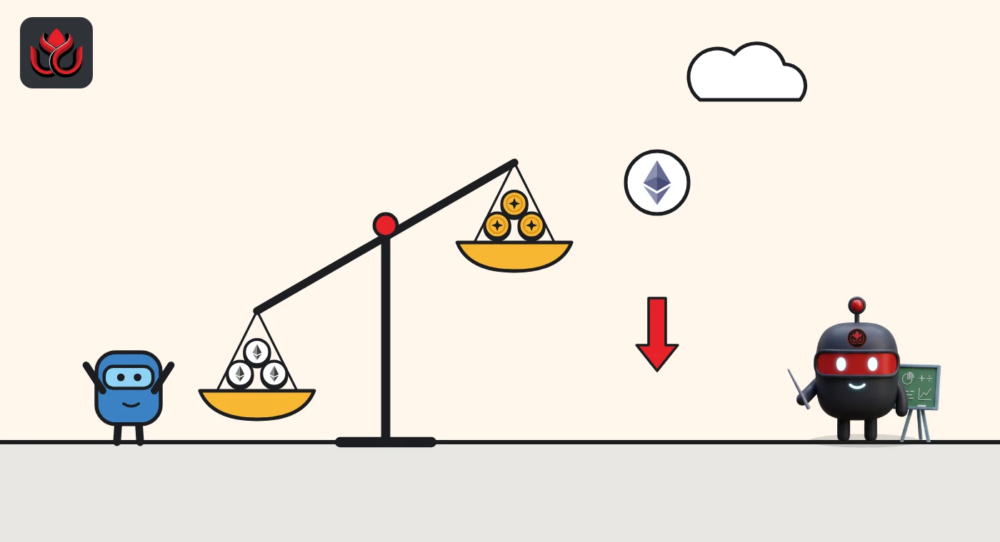

Shorts now pay longs on 77% of ether's open futures bets. On Friday it was 21.5%
After Sunday's 4.6% drop, funding turned negative on Binance's biggest ether market. Bitcoin barely moved: 1.4% of its bets lean short.
Key points
- Funding was negative on 60 of 141 ether perp markets CoinGecko tracks, holding $29.30 billion of $37.95 billion in open bets (77.2%), at 12:40 a.m. ET on November 9.
- On November 6 the same reading was 21.5%. Solana is even more one-sided at 81.0%, XRP is split at 52.4%, and bitcoin sits at 1.4%.
- Ether's open bets fell from about 18.9 million ETH to about 17.8 million ETH since Friday, so some traders closed positions. The drop is not only a price effect.
What funding tells you
A perpetual future (perp) is a bet on a coin's price with no end date. Exchanges keep a perp's price close to the coin's by making one side pay the other every few hours. That payment is called funding. Below zero, the traders betting on a fall (shorts) pay the ones betting on a rise (longs), a sign that short bets are in higher demand.
Each exchange sets its own funding schedule, so we only count whether a market's rate is above or below zero. That matches the method in our November 6 reading.
Ether flipped, bitcoin did not
We read every perp market with open interest (the value of bets still open) in CoinGecko's derivatives data at 12:40 a.m. ET on November 9, 2026.
- Ether: 141 markets, $37.95 billion open. Negative funding on 60 of them, holding $29.30 billion, or 77.2%.
- Solana: 126 markets, $7.56 billion. Negative on 66, holding $6.13 billion (81.0%).
- XRP: 119 markets, $3.77 billion. Negative on 32, holding $1.98 billion (52.4%).
- Bitcoin: 140 markets, $64.96 billion. Negative on 10, holding $0.91 billion (1.4%).
On Friday, Binance's biggest ether market, ETHUSDT, still had positive funding. Now it is negative, with $4.87 billion open. So are Binance's ETHUSDC ($2.64 billion), CoinW's ETH/USDT ($2.61 billion), MEXC's ETH_USDT ($2.28 billion) and Hyperliquid's ETH-USD ($1.93 billion). Of the 10 largest ether markets, only WEEX's ETH-USDT ($2.91 billion) was still above zero, and only just.
Share of open perp bets with negative funding
%
Perpetual markets with open interest. Source: CoinGecko derivatives API, read November 9, 2026, 12:40 a.m. ET (November 6 row read November 6, 7:00 a.m. ET).

Traders closed ether bets
Ether's open bets were worth $42.48 billion on Friday at an ether price of $2,242.62. That is about 18.9 million ETH. On CoinGecko at 12:43 a.m. ET on November 9, ether traded at $2,127.23, down 4.7% in 24 hours. At that price, $37.95 billion is about 17.8 million ETH. Roughly 1.1 million ETH of bets, about 6%, were closed or liquidated (force-closed by the exchange) since Friday. Bitcoin, at $74,301, was down 1.9%.
Funding reflects which side is in more demand on each market. It says nothing about who holds the bets.
LC Insight analysis
This section is our reading of the facts above, not a statement of fact.
- We think the jump from 21.5% to 77% is the clearest sign yet that traders expect more weakness in ether than in bitcoin.
- One-sided positioning cuts both ways. When most bets lean short, a quick bounce can force shorts to buy back, which can push the price up fast.
- Bitcoin's 1.4% has not moved since Friday, so the stress sits in ether and the large altcoins. The whole market is not leaning short.
What's next
- Whether Binance's ETHUSDT funding turns positive again
- Whether ether's open bets keep shrinking in ETH terms
- Whether bitcoin's negative share starts to rise
Disclaimer. This article is based on public information and the sources listed below as of the update time shown. It is for information only and is not investment, legal or tax advice. Figures may change as companies and authorities publish new data.